ARIMA Models
Lecture 09
Dr. Colin Rundel
\(MA(q)\)
From last time - a \(MA(q)\) process with \(\w_t \overset{iid}{\sim} N(0,\sigma^2_w)\), \[y_t = \delta + w_t + \theta_1 \, w_{t-1} + \theta_2 \, w_{t-2} + \cdots + \theta_q \, w_{t-q} \]
has the following properties, \[E(y_t) = \delta\]
\[ Var(y_t) = \gamma(0) = (1 + \theta_1^2 + \theta_2 + \cdots + \theta_q^2) \, \sigma_w^2 \]
\[ Cov(y_t, y_{t+h}) = \gamma(h) = \begin{cases} \sigma^2_w \sum_{j=0}^{q-|h|} \theta_j \theta_{j+|h|} & \text{if $|h| \leq q$} \\ 0 & \text{if $|h| > q$} \end{cases} \]
and is stationary for any values of \((\theta_1, \ldots,\theta_q)\)
\(MA(\infty)\)
If we let \(q \to \infty\) then process will be stationary if and only if the moving average coefficients (\(\theta\) ’s) are square summable, i.e.
\[ \sum_{i=1}^\infty \theta_i^2 < \infty\]
which is necessary so that the \(Var(y_t) < \infty\) condition is met for weak stationarity.
Sometimes, a slightly stronger condition known as absolute summability, \(\sum_{i=1}^\infty |\theta_i| < \infty\) is necessary (e.g. for some CLT related asymptotic results).
Invertibility
If an \(MA(q)\) process, \(y_t = \delta + \theta_q(L) w_t\), can be rewritten as a stationary \(AR\) process then the process is said to be invertible.
\(MA(1)\) w/ \(\delta=0\) example:
Invertibility vs Stationarity
A \(MA(q)\) process is invertible if \(y_t = \delta + \theta_q(L) \, w_t\) can be rewritten as an exclusively \(AR\) process (of possibly infinite order), i.e. \(\phi(L) \, y_t = \alpha + w_t\).
\(~\)
Conversely, an \(AR(p)\) process is stationary if \(\phi_p(L) \, y_t = \delta + w_t\) can be rewritten as an exclusively \(MA\) process (of possibly infinite order), i.e. \(y_t = \delta + \theta(L) \, w_t\).
\(~\)
So using our results w.r.t. \(\phi(L)\) it follows that if all of the roots of \(\theta_q(L)\) are outside the complex unit circle then the moving average process is invertible.
Differencing
Difference operator
We will need to define one more notational tool for indicating differencing \[ \Delta y_t = y_t - y_{t-1} \]
Just like the lag operator we will indicate repeated applications of this operator using exponents \[ \begin{aligned} \Delta^2 y_t &= \Delta (\Delta y_t) \\ &= (\Delta y_t) - (\Delta y_{t-1}) \\ &= (y_t - y_{t-1}) - (y_{t-1} - y_{t-2}) \\ &= y_t - 2y_{t-1}+y_{t-2} \end{aligned} \]
Note that \(\Delta\) can even be expressed in terms of the lag operator \(L\), \[ \Delta^d = (1-L)^d \]
Differencing and Stocastic Trend
Using the two component time series model \[ y_t = \mu_t + x_t \] where \(\mu_t\) is a non-stationary trend component and \(x_t\) is a mean zero stationary component.
\(~\)
We have already shown that differencing can address deterministic trend (e.g. \(\mu_t = \beta_0+\beta_1 \, t\)). In fact, if \(\mu_t\) is any \(k\)-th order polynomial of \(t\) then \(\Delta^k y_t\) is stationary.
\(~\)
Differencing can also address stochastic trend such as in the case where \(\mu_t\) follows a random walk.
Stochastic trend - Example 1
Let \(y_t = \mu_t + w_t\) where \(w_t\) is white noise and \(\mu_t = \mu_{t-1} + v_t\) with \(v_t\) being a stationary process with mean 0.

Differenced stochastic trend
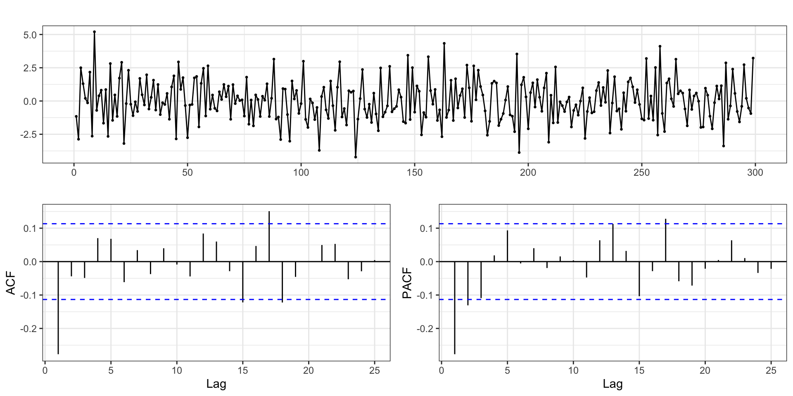Stationary?
Is \(y_t\) stationary?
Difference Stationary?
Is \(\Delta y_t\) stationary?
Stochastic trend - Example 2
Let \(y_t = \mu_t + w_t\) where \(w_t\) is white noise and \(\mu_t = \mu_{t-1} + v_t\) but now \(v_t = v_{t-1} + e_t\) with \(e_t\) being stationary.
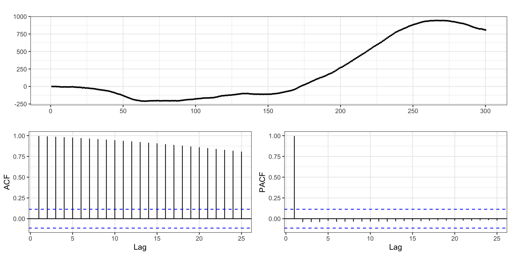Differenced stochastic trend
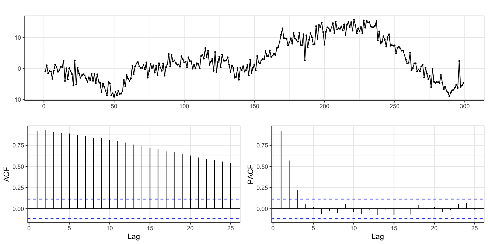Twice differenced stochastic trend
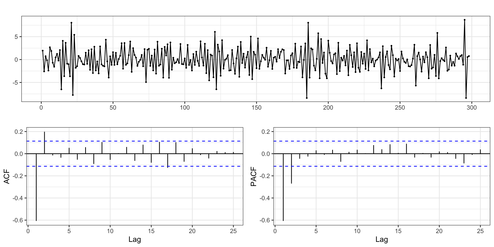Difference stationary?
Is \(\Delta y_t\) stationary?
2nd order difference stationary?
What about \(\Delta^2 y_t\), is it stationary?
\(ARIMA\)
\(ARIMA\) Models
Autoregressive integrated moving average are just an extension of an \(ARMA\) model to include differencing of degree \(d\) to \(y_t\) before including the autoregressive and moving average components.
\[ \begin{aligned} ARIMA(p,d,q): \qquad \phi_p(L) \; \Delta^d \, y_t &= \delta + \theta_q(L) w_t \end{aligned} \]
\(~\)
Box-Jenkins approach:
Transform data if necessary to stabilize variance
Choose order (\(p\), \(d\), \(q\)) of ARIMA model
Estimate model parameters (\(\delta\), \(\phi\)s, and \(\theta\)s)
Diagnostics
Using forecast - random walk with drift
Some of R’s base timeseries handling is a bit wonky, the forecast package offers some useful alternatives and additional functionality.
EDA
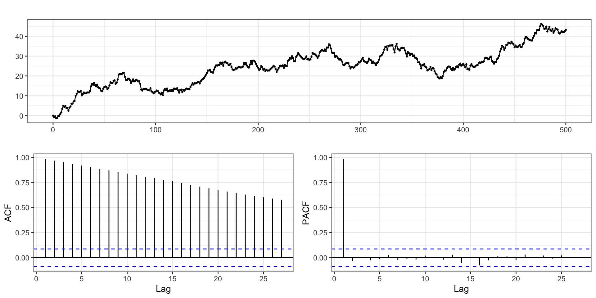Differencing - Order 1
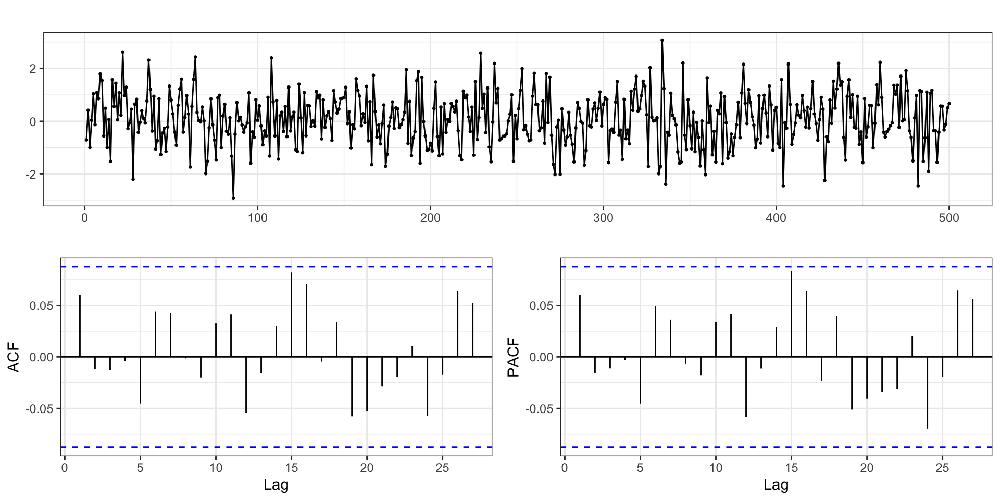Differencing - Order 2
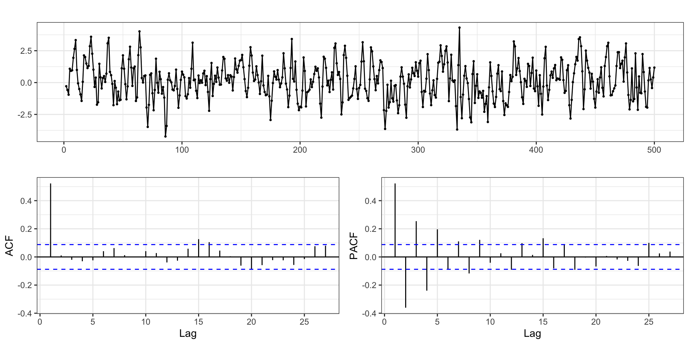Differencing - Order 3
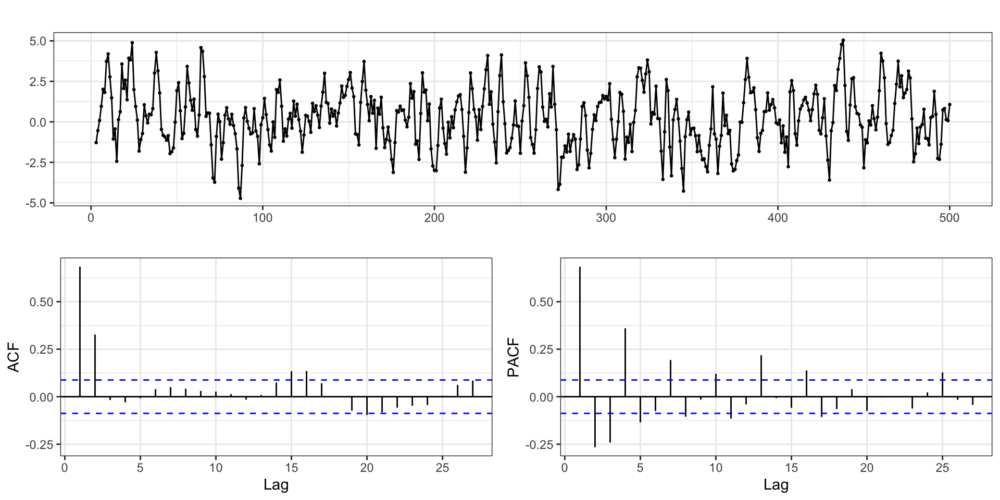AR or MA?
EDA
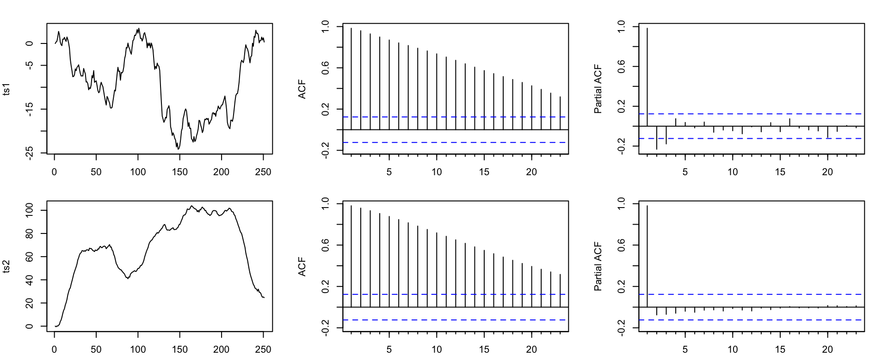ts1 - Finding \(d\)
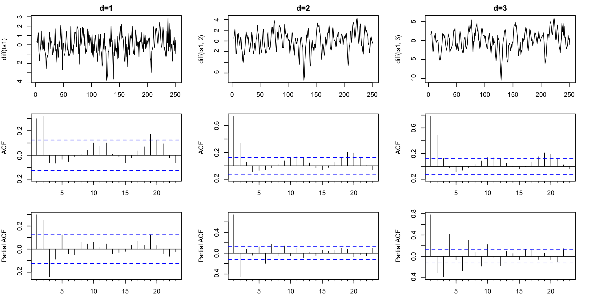ts2 - Finding \(d\)
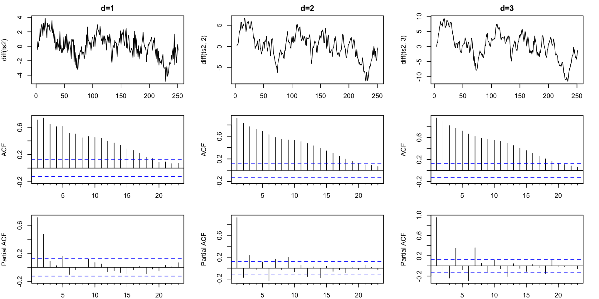ts1 - Models
| p | d | q | aic | aicc | bic |
|---|---|---|---|---|---|
| 0 | 1 | 0 | 786.60 | 786.62 | 790.12 |
| 1 | 1 | 0 | 765.38 | 765.43 | 772.42 |
| 2 | 1 | 0 | 751.40 | 751.50 | 761.96 |
| 0 | 1 | 1 | 774.29 | 774.34 | 781.33 |
| 1 | 1 | 1 | 761.59 | 761.68 | 772.15 |
| 2 | 1 | 1 | 746.66 | 746.82 | 760.74 |
| 0 | 1 | 2 | 730.34 | 730.43 | 740.90 |
| 1 | 1 | 2 | 731.92 | 732.08 | 746.01 |
| 2 | 1 | 2 | 733.62 | 733.87 | 751.23 |
ts2 - Models
| p | d | q | aic | aicc | bic |
|---|---|---|---|---|---|
| 0 | 1 | 0 | 943.49 | 943.51 | 947.01 |
| 1 | 1 | 0 | 770.79 | 770.84 | 777.83 |
| 2 | 1 | 0 | 710.48 | 710.57 | 721.04 |
| 0 | 1 | 1 | 863.89 | 863.94 | 870.93 |
| 1 | 1 | 1 | 715.95 | 716.05 | 726.51 |
| 2 | 1 | 1 | 710.16 | 710.32 | 724.24 |
| 0 | 1 | 2 | 784.75 | 784.85 | 795.31 |
| 1 | 1 | 2 | 712.58 | 712.74 | 726.66 |
| 2 | 1 | 2 | 711.80 | 712.05 | 729.41 |
ts1 - final model
Fitted:
Series: ts1
ARIMA(0,1,2)
Coefficients:
ma1 ma2
0.2990 0.4700
s.e. 0.0558 0.0583
sigma^2 = 1.068: log likelihood = -362.17
AIC=730.34 AICc=730.43 BIC=740.9Truth:
ts2 - final model
Fitted:
Series: ts2
ARIMA(2,1,0)
Coefficients:
ar1 ar2
0.3730 0.4689
s.e. 0.0556 0.0556
sigma^2 = 0.9835: log likelihood = -352.24
AIC=710.48 AICc=710.57 BIC=721.04Truth:
Residuals
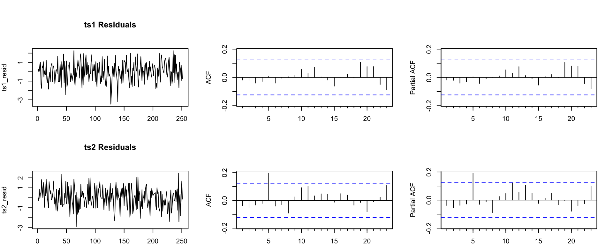Automatic model selection
ts1:
General Guidance
Positive autocorrelations out to a large number of lags usually indicates a need for differencing
Slightly too much or slightly too little differencing can be corrected by adding AR or MA terms respectively.
A model with no differencing usually includes a constant term, a model with two or more orders (rare) differencing usually does not include a constant term.
After differencing, if the PACF has a sharp cutoff then consider adding AR terms to the model.
After differencing, if the ACF has a sharp cutoff then consider adding an MA term to the model.
It is possible for an AR term and an MA term to cancel each other’s effects, so try models with fewer AR terms and fewer MA terms.
Sta 344 - Fall 2022